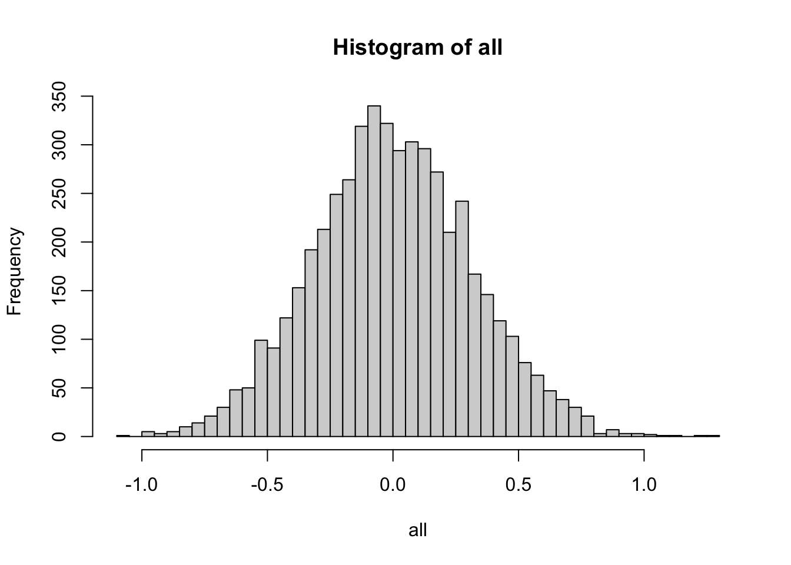

Chapter 3 Reproducible research
3.1 Scientific inquiry
The term data science contains the word science. It is our view that data science is more or less synonimous with with modern empirical science and as such it should adhere to the standards for scientific inquiry.
Ideally, scientific inquiry would always be objective and correct. However, these are unattainable ideals! Science will always be subjective at least in the sense of what we investigate and how we choose to investigate it. And scientists, like all people, even with the best intentions and practices, make mistakes. Instead, the realistic standard is lower, albeit still surprisingly difficult to attain - research should be reproducible.
We will borrow two definitions from the American Statistical Association:
Reproducibility: A study is reproducible if you can take the original data and the computer code used to analyze the data and reproduce all of the numerical findings from the study.
Replicability: This is the act of repeating an entire study, independently of the original investigator without the use of original data (but generally using the same methods).
In other words, reproducibilty refers to providing a complete and unambiguous description of the entire process from the original raw data to the final numerical results. Reproducibility does not concern itself with the correctness of the results or the process. Our research might even have major bugs in the code or completely flawed methodology, but if it is reproducible, those bugs and those flaws are transparent and will be found by those trying to reproduce or replicate our results. That is, as long as our research is reproducible, scientific critique and progress can be made! However, if our research is not reproducible, then it is of much less value!
Reproducibility will be our minimum standard for scientific enquiry and is also a prerequisite for replicability. Replicability, on the other hand, does concern itself with the correctness of the original research. If we independently repeat a study, we expect to get the same results or at least within some margin of error due to sampling and other sources of variability. Sometimes we might replicate our own study to validate it, but in most cases, replication of our studies is done by others.
3.2 From principles to practice
Perfect reproducibility is also unattainable, because not all factors can be feasibly accounted for (time, location, hardware used, etc.). Instead, we will strive for a high but practically feasible level of reproducibility. We will also introduce the practical dimension of how easy to reproduce research is. For example, if we precisely describe all data manipulations in a text document, the data manipulation part of our research will be reproducible. However, it will be much more difficult to reproduce than, for example, if we provided well-documented code that did the same manipulations.
The modern standard for reproduciblity from data to results is to use computer code for everything. This includes even minimal changes to the original data (for example, renaming a column), generating and including plots and tables and even single-number data in the text of our report or paper. Computer code is, by definition, clear and unambiguous - there is no room for misinterpretation of what has been done. And, if we have everything in code, we completely avoid the possiblity of introducing errors or undetectable changes through manual manipulation of the data or copying the results
Such code together with the original data and a precise description of the platform and software used (relevant hardware, operating system, packages, including versions) constitutes as highly and easily reproducible research. This process can be made much easier with the use of standard tools. In particular, integrated analyses and reports, such as Jupyter notebooks and R markdown and notebooks, which we introduce later in the chapter.
3.2.1 Preregistration - the future standard
As we already discussed above, reproduciblity is concerned only with the completeness and unambiguity of the description of the study. All studies should be reproducible, but we expect that some studies will not replicate. Some due to the inherent risk of statistical procedures, some due to researchers’ mistakes and some due to accidental or deliberate manipulation of the researcher’s degrees of freedom or data dredging. These refer to the choices that we make during a study (some of which should strictly be made before the study). For example:
- the researcher chooses the method or statistical test that confirms the desired hypothesis,
- the researcher selects the hypotheses only after seeing the data,
- the researcher splits the data into subgroups that lead to desired results,
- and many others.
In order to deal with this problem and enforce a higher standard of research (and subsequently fewer studies that do not replicate) preregistration is very slowly but surely becoming the norm for professional research. In essence, preregistration is the practice of registering all relevant aspects of a scientific study (how the data will be collected, hypotheses, methods used, etc.) before we begin with the study itself. Preregistration is made with some central authority, such as the Open science framework and many reputable scientific journals already promote and support preregistered research.
3.3 Reproducibility tools in R
In this section we introduce four different approaches to integrating R code and text to produce dynamic reports, fully reproducible reports that can automatically be updated if the data change. All four approaches are integrated into RStudio.
R Markdown
R Markdown (knitr) is the most popular approach to dynamic reporting with R. It combines the lightweight Markdown language with R code chunks. R Markdown documents can be rendered as html, pdf, word, etc.
Here is an example of a R markdown file (.Rmd extension) that features R code, inline R code and an image:
---
output: html_document
---
```{r setup, include=FALSE}
knitr::opts_chunk$set(echo = FALSE)
```
## Data
```{r}
set.seed(0)
x <- rnorm(100)
y <- rnorm(100)
```
```{r fig.width=4, fig.height=4, fig.cap = paste("Relationship between high jump and long jump performance (n =", length(x), ").")}
plot(x,y)
```
We can also use inline R core: there are `r length(y)` observations in our data.
R Markdown is very easy to use and can produce nice documents. However, it lacks the control of more specialized typesetting languages such as LaTeX.
A good starting point for learning R Markdown is the free online book R Markdown: The Definitive Guide. Note that the textbook you are reading was also produced with R Markdown and the Bookdown extension. R Markdown can also be used with chunks from other programming languages, for example, Python, with the help of the reticulate package.
R Notebook
A R Notebook is identical to a R Markdown document, except that we replace the output to html_notebook:
---
output: html_notebook
---
```{r setup, include=FALSE}
knitr::opts_chunk$set(echo = FALSE)
```
## Data
```{r}
set.seed(0)
x <- rnorm(100)
y <- rnorm(100)
```
```{r fig.width=4, fig.height=4, fig.cap = paste("Relationship between high jump and long jump performance (n =", length(x), ").")}
plot(x,y)
```
We can also use inline R core: there are `r length(y)` observations in our data.
R Notebooks are more interactive - code chunk results are shown inline and are rendered in real time. That is, we can render individual chunks instead of the entire document.
Sweave
When we require more control over the typsetting, for example, when we are trying to produce an elegant pdf document or adhere to the typsetting standards of an academic journal, we might prefer Sweave. Sweave is an integration of LaTeX and R code - in essence, a LaTeX document with R code chunks. R code is executed when we compile the Sweave document with Sweave and LaTeX.
Here is an example of a Sweave file (.Rnw extension) that demonstrates the use of R code, inline R code and an image:
\documentclass{article}
\begin{document}
\section*{Data}
<<>>=
set.seed(0)
x <- rnorm(100)
y <- rnorm(100)
@
Look at the nice plot in Figure \ref{fig1}.
\begin{figure}[htb]
<<fig=T>>=
plot(x,y)
@
\caption{Relationship between high jump and long jump performance (n = \Sexpr{length(x)}).}\label{fig1}
\end{figure}
\end{document}
Sweave gives us all the typsetting control of LaTeX at the expense of more code and having to compile the LaTeX as well. A good starting point for Sweave is this compact Sweave manual.
Shiny web apps and dashboards
Shiny is an R package that makes it easy to build interactive applications with R. Shiny can be used to produce standalone web apps and dashboards or it can be embedded into R Markdown documents.
Shiny is useful for rapid development of user-friendly interfaces to interactive analyses of our data. These Shiny tutorials are a good starting point for further study.
3.4 Reproducibility tools in Python
Python offers a variety of tools similar to R. It provides Jupyter notebooks with multiple options to create reproducible Python code with dynamic visualizations and presentations and exports to different formats. We already showed how to install Jupyter notebooks in Chapter 1.
The NBConvert tool allows you to convert a Jupyter .ipynb notebook document file into another format. The nbconvert documentation contains a complete description of this tool’s capabilities. It allows for:
- Presentation of information in familiar formats, such as PDF.
- Pblishing of research using LaTeX and opens the door for embedding notebooks in papers.
- Collaboration with others who may not use the notebook in their work.
- Sharing content with many people via the web using HTML.
Overall, notebook conversion and the nbconvert tool give scientists and researchers the flexibility to deliver information in a timely way across different formats. Primarily, the nbconvert tool allows you to convert a Jupyter .ipynb notebook document file into another static format including HTML, LaTeX, PDF, Markdown, reStructuredText, and more. The nbconvert tool can also add productivity to your workflow when used to execute notebooks programmatically.
If used as a Python library (import nbconvert), nbconvert adds notebook conversion within a project. For example, nbconvert is used to implement the “Download as” feature in the Jupyter notebook web application. When used as a command line tool (jupyter nbconvert), users can conveniently convert just one or a batch of notebook files to another format.
Jupyter Dashboards
A jupyter dashboard is a Jupyter notebook with the dashboards layout extension, where we can arrange our notebook outputs (text, plots, widgets, etc.) in a grid - or report-like layouts. The layouts are saved in the notebook document. When in a Jpyter notebook, we should see the dashboard view extension to control the dashboard settings:

Jupyter notebooks and dashboards are also widely used, support a large number of programming languages and they provide:
- Documentation and literate programming by combining rich-text narrative concepts & machine-readable code. The notebeook itself is a data-structure with metadata that can be easily read and parsed.
- Exploration & development: Intermediate steps are saved in a clean, well documented format.
- Communication/Collaboration: sharing research with peers, collaborators, reviewers, public.
- Publishing: It is simple and quick switch between the development & publishing stage
In combination with jupyter widgets, dynamic dashboards can be created easily. Below we show an example of a general dashboard, where a user selects a location and weather data is extracted from the Web. Along with the data the location of a weather station is also visualized.
import ipywidgets as widgets
from ipywidgets import interact
import urllib.request
from lxml import etree
import folium
w = widgets.Dropdown(
options=[("Ljubljana", "LJUBL-ANA_BEZIGRAD"), ("Celje", "CELJE"),
("Kočevje", "KOCEVJE"), ("Novo mesto", "NOVO-MES")],
value="LJUBL-ANA_BEZIGRAD",
description='Location:',
)
@interact(location=w)
def f(location):
url = f"http://meteo.arso.gov.si/uploads/probase/www/observ/surface/text/en/observation_{location}_latest.xml"
xml = etree.XML(urllib.request.urlopen(url).read())
lat = etree.XPath("//domain_lat/text()")(xml)[0]
lon= etree.XPath("//domain_lon/text()")(xml)[0]
station_name = etree.XPath("//domain_title/text()")(xml)[0]
last_updated = etree.XPath("//tsUpdated/text()")(xml)[0]
weather = etree.XPath("//nn_shortText/text()")(xml)[0]
temp = etree.XPath("//t/text()")(xml)[0]
humidity = etree.XPath("//rh/text()")(xml)[0]
print(f"Location: {station_name}\nLast updated: {last_updated}\n\n")
print(f"Weather info: {weather}\nTemperature: {temp}°C\nHumidity: {humidity}%")
slovenia_map = folium.Map(location=[46, 14.5], zoom_start=9, tiles='Stamen Terrain')
folium.Marker([46.0658,14.5172], icon=folium.Icon(color='green', icon='ok-sign')).add_to(slovenia_map)
display(slovenia_map)
There exist many possible options for graph visualizations (e.g. Plotly) and integrations of common libraries such as matplotlib.
from matplotlib import pyplot as plt
import numpy as np
import math
%matplotlib inline
def showGraph(scale):
x = np.arange(0, math.pi*scale, 0.05)
y = np.sin(x)
fig = plt.figure()
ax = fig.add_axes([0, 0, 1, 1])
ax.plot(x, y)
ax.set_xlabel("Angle")
ax.set_ylabel("sine")
interact(showGraph, scale = widgets.IntSlider(value=4, description='Scale', max=10, min=1))
3.5 Data dashboards - tooling and libraries
Data dashboards can make data more accessible to your non-technical teams. That is why it is valuable to include visualizations along with explanations in your reports. A data dashboard consists of many different components and needs to provide the following functionalities:
- Analyze: Manipulate and summarize data using a backend library such as Pandas.
- Visualize: Create plots and graphs of the data using a graphing library such as Bokeh.
- Interact: Accept user input using a frontend library such as React.
- Serve: Listen for user requests and return webpages using a web server such as Flask.
 Some of the possible tools are listed in the previous chapters but new tools appear very often out there, so you should keep pace with the trends (at least for testing multiple options). To better decide, you can try to choose between the following (based on a blog post):
Some of the possible tools are listed in the previous chapters but new tools appear very often out there, so you should keep pace with the trends (at least for testing multiple options). To better decide, you can try to choose between the following (based on a blog post):
- Dash if you already use Python for your analytics and you want to build production-ready data dashboards for a larger company.
- Streamlit if you already use Python for your analytics and you want to get a prototype of your dashboard up and running as quickly as possible.
- Shiny if you already use R for your analytics and you want to make the results more accessible to non-technical teams.
- Jupyter if your team is very technical and doesn’t mind installing and running developer tools to view analytics.
- Voila if you already have Jupyter Notebooks and you want to make them accessible to non-technical teams.
- Flask if you want to build your own solution from the ground up (generally not an option due to time constraints).
3.6 Further reading and references
Science is in a replication and reproducibility crisis. In some fields more than half of published studes fail to replicate and most studies are not reproducible: Baker, M. (2016). 1,500 scientists lift the lid on reproducibility. Nature News, 533(7604), 452.
Preregistration will eventually become the standard for publication of empirical research: Nosek, B. A., Ebersole, C. R., DeHaven, A. C., & Mellor, D. T. (2018). The preregistration revolution. Proceedings of the National Academy of Sciences, 115(11), 2600-2606.
There are many new tools appearing, so search for new options from time to time and select the most suitable for you (e.g. comparison of a few).
3.7 Learning outcomes
Data science students should work towards obtaining the knowledge and the skills that enable them to:
- Produce reproducible data science analyses.
- Identify reproducibility flaws in own and other peoples’ research.
- Distinguish between reproducibility and replication.
3.8 Practice problems
Create a short R Markdown, Sweave and/or Jupyter Notebook that loads some data, draws a plot, prints a table and contains some text with an example of inline use of code.
Consider the following experiment of drawing \(m > 1\) samples from a distribution (standard normal or uniform) and taking their average, repeating this process for \(n > 1\) times and plotting the histogram of these \(n\) averages:
n <- 5000
m <- 10
set.seed(0)
dist <- "normal"
all <- c()
for (i in 1:n) {
if (dist == "normal") {
x <- rnorm(m)
} else {
x <- runif(m)
}
all <- c(mean(x), all)
}
hist(all, breaks = sqrt(n))
Create a Shiny App, Shiny Dashboard or Jupyter Dashboard that draws such a histogram and allows you to interactively change \(n\), \(m\) and which distribution is used (support standard normal, uniform and a third distribution of choice). Use the Dashboard to visually explore if the sample average tend to a normal distribution as \(m\) grows larger.